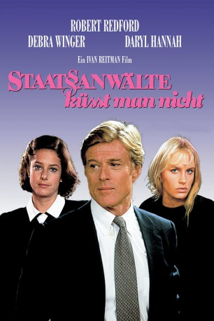

#12025 Staatsanwälte küsst man nicht
Alternativ: Legal Eagles (Englischer Titel)
 
 IMDB-Wertung: 6.0 / 10
IMDB-Wertung: 6.0 / 10  Tomatometer: 47
Tomatometer: 47  Metascore: 0
Metascore: 0 
Der Staatsanwalt Tom Logan steht für eine Beförderung an, zumindest bis er in den Fall seiner Anwaltskollegin Laura Kelly und deren unberechenbarer Mandantin Chelsea Deardon hineingezogen wird. Scheinbar gehört der Diebstahl eines sehr wertvollen Gemäldes zu Chelseas geringeren Delikten, und als die beiden Frauen Tom überreden, seine Beziehungen spielen zu lassen, eröffnet sich schon bald ein weitreichender Fall...
Jahr: 1986
Dauer: 115 Minuten
FSK: 12
Land: USA Studio: Universal PicturesTonspuren:
Untertitel: Deutsch,
Auflösung: 1080p (1920x816) Größe: 10065 MB
Genre: Komödie, Krimi, Liebe
Regisseur: Ivan Reitman
Drehbuch: Ivan Reitman, Jim Cash, Jack Epps Jr., Jim Cash, Jack Epps Jr.
Soundtrack: Elmer Bernstein
Darsteller:
Datei: X:\1986\Staatsanwälte küsst man nicht (1986, FSK12, 1920x816).mkv seit 11.11.2019
Festplatte: Gemischt-01+Anime
 Es gibt insgesamt 50 Filme in der Gruppe '1986'
Es gibt insgesamt 50 Filme in der Gruppe '1986'